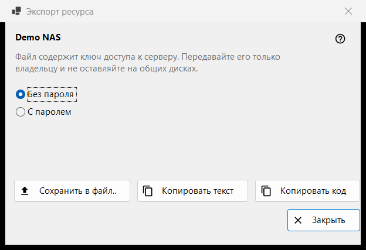
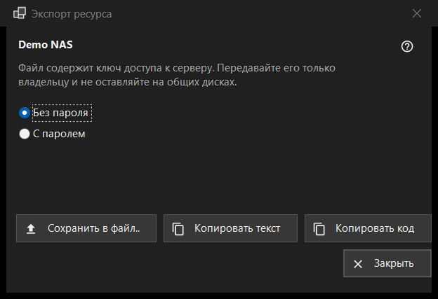

Экспорт ресурса
Назначение
Готовит настройки одного SFTP-сервера, чтобы другой компьютер или телефон мог их импортировать. Окно открывается пунктом «Экспорт..» в меню «Ещё» списка ресурсов и требует выбранного ресурса; общую папку Share Manager экспортируют из самого Share Manager.


Порядок действий
- Прочитайте предупреждение под названием ресурса.
- Выберите «Без пароля» (по умолчанию) или «С паролем».
- Нажмите «Сохранить в файл..» либо скопируйте настройки текстом или коротким кодом.
- Передайте результат только его владельцу.
Элементы окна
Предупреждение
Строка под названием предупреждает, что файл содержит ключ доступа к серверу: передавайте его только владельцу и не оставляйте на общих дисках. Это относится и к файлу, и к скопированному тексту, и к коду.
Без пароля или с паролем
Вначале выбрано «Без пароля». «С паролем» доступно, только если сохранённый пароль удаётся прочитать; иначе показывается подсказка «Пароль не сохранён - файл будет без пароля.» Пароль расшифровывается в памяти на время экспорта и больше никуда не попадает.
Сохранить, копировать текст, копировать код
«Сохранить в файл..» записывает файл .fmscfg через диалог сохранения; запись отказывает на дисках FAT и exFAT, на сетевых дисках и в папках, которые могут менять другие пользователи, и никогда не оставляет наполовину записанный файл. «Копировать текст» кладёт в буфер документ настроек, «Копировать код» - короткий код с тем же содержимым. Оба копируются с пометками приватности (без истории буфера обмена и облачной синхронизации). Результат виден в строке состояния.
Что можно экспортировать
Только SFTP-сервер, ключ которого просмотрщик уже запомнил. Окно открывается в любом случае, а отказ появляется в строке состояния при нажатии кнопки: сетевую папку (SMB) этот файл описать не может; ключ сервера не запомнен (откройте ресурс один раз и подтвердите ключ); у ресурса нет адреса, который можно передать; папка записана так, что файл её не принимает (исправьте через «Изменить..»).